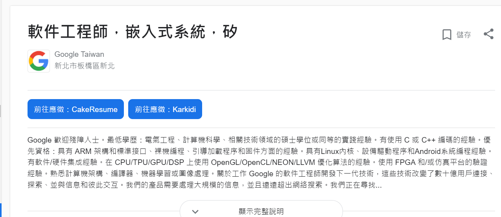

GOOGLE 谷歌
|
| 
|
公司資訊
公司名：GOOGLE
地址：台北101購物中心
服務項目：
-
Google Classroom
- GMAIL
- CHROME
- Gppgle Map
- YouTube
職務介紹：
名稱：嵌入式軟體工程師
- DAB、嵌入式系統產品開發及維護
- Firmware upgrade開發及維護
|
工作要求：
須就讀計算機工程、電氣工程碩士學位以上者，且英語和中文皆須流利。
有使用 C 或 C++ 編碼的經驗。
優先資格：具有 ARM 架構和標準接口、裸機編程、引導加載程序和固件方面的經驗。
具有Linux內核、設備驅動程序和Android系統編程經驗。有軟件/硬件集成經驗。
在 CPU/TPU/GPU/DSP 上使用 OpenGL/OpenCL/NEON/LLVM 優化算法的經驗。
使用 FPGA 和/或仿真平台的驗證經驗。熟悉計算機架構、編譯器、機器學習或圖像處理。
| |